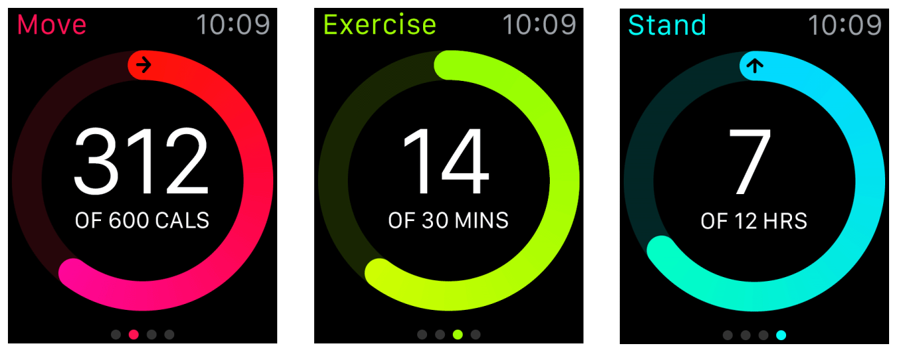

계층적. 이 스타일은 iOS 의 네비게이션 스타일과 매칭되며 계층적인 정보를 가지는 앱에 가장 적당하다. 계층적인 앱에서 사용자들은 목적지에 닿을 때까지 스크린당 하나의 선택을 할 것이다. 다른 목적지로 네비게이트 하기 위해서, 사용자는 다른 선택을 위해 전체 또는 일부분을 거슬러 올라가야 한다.
계층적 모델은 전형적으로 평면적이고 페이지화 된 모델보다 복잡한 앱 인터렉션에 더 잘 맞는다.
페이지-기반. 페이지회된 인터페이스는 사용자가 수평으로 스와이핑해서 콘텐트의 페이지들 사이를 네비게이트 하도록 한다. 페이지 기반의 인터페이스는 간단한 데이터 모델이 각 페이지 간의 테이터가 서로 직접적인 연결이 되어 있지 않은 앱에 적당하다.
각 페이지의 하단에는 점 인디케이터가 있어서 전체 중에서 현재 사용자의 위치를 보여준다. 네비게이션을 단순화 하기 위해서 가능한 페이지 갯수를 적게 유지하라.

계층적 인터페이스와 페이지 기반의 인터페이스를 결합할 수는 없다. 디자인 시, 앱의 콘텐트에 가장 적당한 스타일을 선택하고 그 스타일에 맞춰 디자인하라.
어느쪽 인터페이스 스타일을 사용하든 콘텐트를 모달하게 제공할 수 있다. 모달 인터페이스는 사용자가 방해 받지 않고 어떤 테스크를 완료하거나 정보를 얻을 수 있도록 하지만, 그 동안 앱의 다른 부분과는 인터렉팅을 할 수 없게 막는다. 보다 자세한 정보는 모달 시트를 보라.
사용자 인터렉션
액션-기반 이벤트. 단일 탭 제스처는 사용자가 당신의 앱과 인터렉트하는 주된 방식이다. 테이블 로우, 버튼, 스위치, 그리고 다른 컨트롤들은 모두 그 위를 탭함으로서 동작한다. 이 탭들은 당신의 와치킷 익스텐션의 코드로 전달된다.
제스쳐. 시스템이 당신을 대신해서 모든 제스처들이 표준 동작을 구현하도록 처리합니다.
수직방향의 스와이핑은 현재 화면을 스크롤합니다.
수평방향의 스와이핑은 페이지-기반 인터페이스에서 이전 또는 다음 페이지를 표시합니다.
왼쪽 모서리 스와이프는 부모 인터페이스 컨트롤러로 거슬러 갑니다.
탭은 선택이나 인터렉션을 나타냅니다. 탭은 시스템에 의해 처리되며 와치킷 익스텐션의 액션 메소드로 전달됩니다.
애플 와치는 핀치같은 멀티-핑거 제스처를 지원하지 않습니다.
압력 터치. 터치를 감지하는 것과 같이, 레티나 디스플레이는 사용자의 손가락에 의해서 가해지는 압력의 양 또한 감지합니다. 이러한 터치와 압력의 조합이 감지되면, 시스템은 현재의 스크린과 관련된 컨텍스트 메뉴(가 있다면)를 표시합니다. 앱은 이 메뉴를 이용해 현재의 콘텐트와 연관된 액션들을 표시할 수 있습니다. 보다 자세한 정보는 메뉴를 보세요.
디지털 크라운. 디지털 크라운은 세밀하게 맞춤 디자인되어 가속 스크롤링시에 애플 와치 디스플레이를 가리지 않아 사용자들이 더 쉽게 긴 페이지를 스크롤합니다.